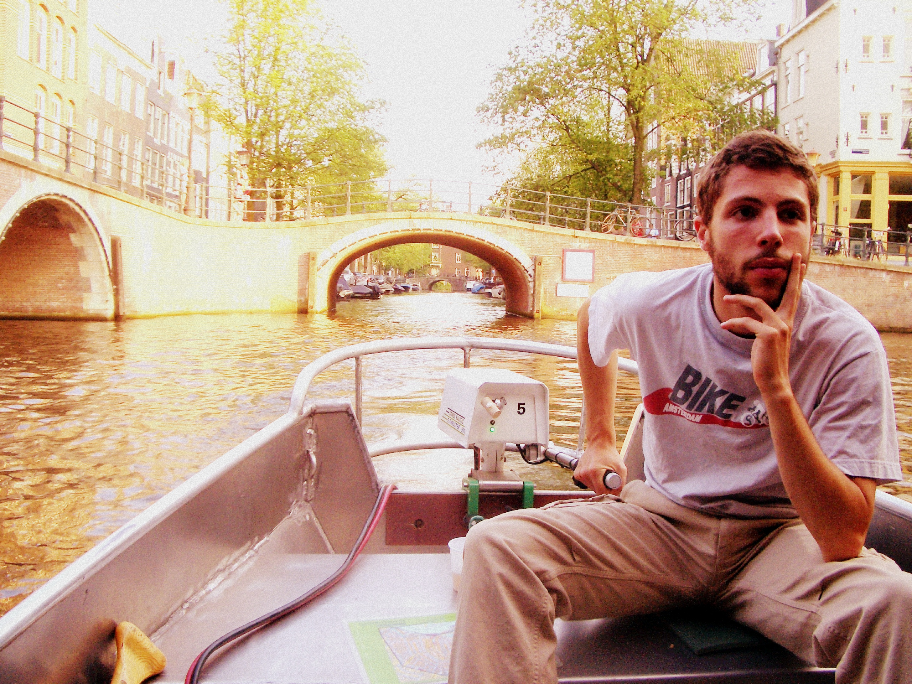

About

Research associate (postdoc) at
Augsburg University
, in the group of
Marc Nieper-Wißkirchen
.
Previously I held an
Einstein fellowship
at Berlin Humboldt University, in the algebraic geometry
group
of
Gavril Farkas
.
I obtained my PhD in Mathematics in 2017 at
University of Poitiers
under the supervision of
Alessandra Sarti
.
I graduated with a BSc in Mathematics (2012) and a MSc in Mathematics (2014) at the
University of Milan
.
My detailed
Curriculum Vitae
.
List of my
preprints/publications
.
(Past and) future
scheduled events
.
Quick links:
Augsburg:
research groups
and weekly
seminars
.
HU Berlin:
algebraic geometry seminar
.
Contact
Email:
marco.ramponi at math.uni-augsburg.de
Phone:
+49 821 598 - 5601
Address:
Lehrstuhl für Algebra und Zahlentheorie
Institut für Mathematik - Universität Augsburg
D-86135 Augsburg, Germany
Home
➪ About